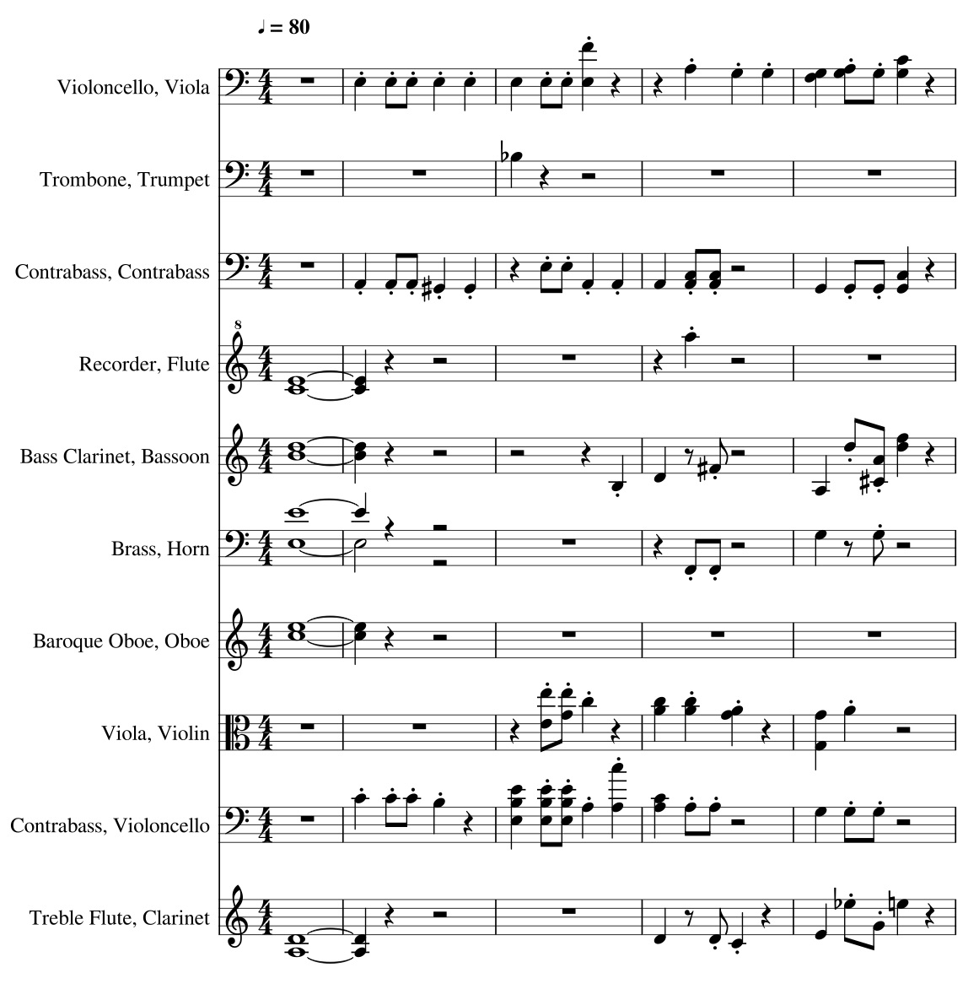
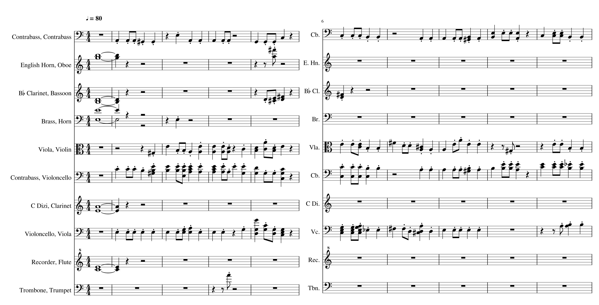
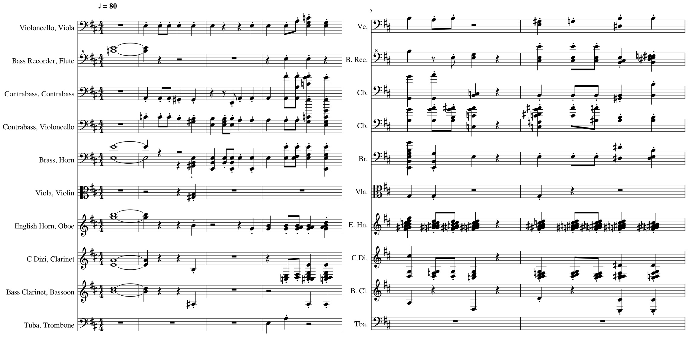
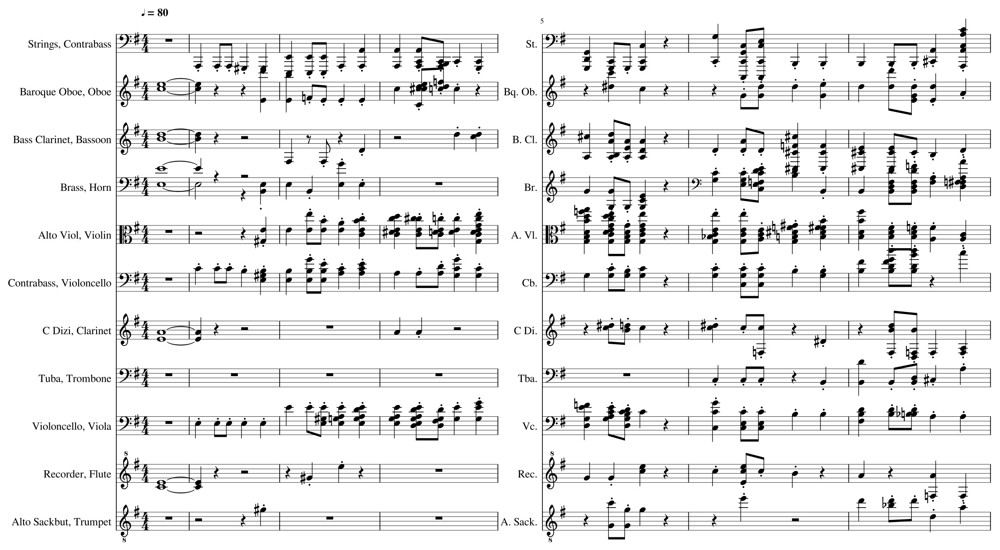

Results
Generated orchestrations
Tchaikowsky quartet
Generated with the LSTM model. All instruments have been mapped to a string quartet.

Brahms symphony n4 movement 4

Beethoven symphony 7 movement 2

X-entropy VS accuracy
Comparison of the binary cross-entropy and the accuracy measure used as selection criteria. The extract to orchestrate is the beginning of the second movement of the 7th symphony of Beethoven. The cross-entropy validation error quickly reaches its maximum value, and the training is stopped after only 1 or 2 epochs On the other side, the accuracy validation curve is much smoother and the over-fitting detection occurs after the 2Oth epoch.X-entropy

Accuracy
Weighted binary cross-entropy
To lower the influence of the true negative, weighted binary cross-entropy have been proposed as a training criterion. The results are presented below.Per-note weighted binary cross-entropy

Weighed binary cross-entropy
If the negative weight is too small, false positives' impact becomes too small, and the orchestration too crowded

Note Weighted X-ent for selection
When using NWX-ent as a selection criterion, the training process is stopped earlier (around the first epoch !) and the results are qualitatively very bad, with a lot of notes being off the harmony of the piano score.

Energy-based VS Feed-forward NN
Energy-based models
Generation strategies
This zip file contains the orchestations generated using different strategies.
NADE
This zip file contains generated orchestration proposed by the different NADE architectures we investigated.